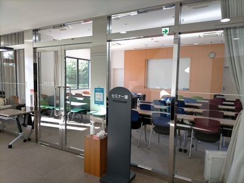
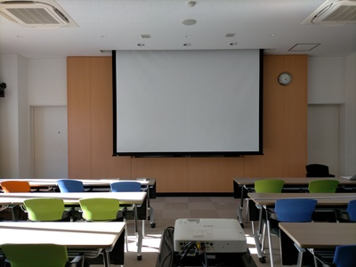
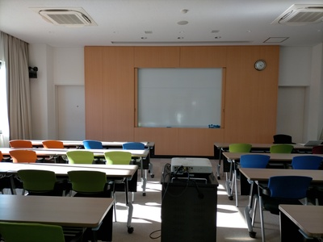
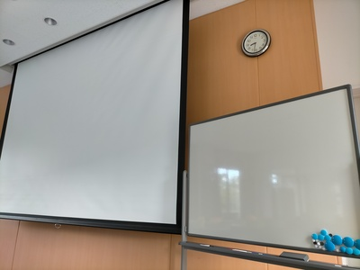

<h2>講演者向け情報</h2>

<dl>
  <dt>WiFi あり</dt>
  <dt>セミナー室、スクリーン・プロジェクタ（HDMI）</dt>
  <dd> </dd>
  <dt>ホワイトボード（メイン）、ホワイトボード（サブ）</dt>
  <dd> </dd>
</dl>

<h2>開催履歴</h2>
<p><a href="../onjuku2025/">2025</a> <p><a href="../onjuku2024/">2024</a> <a href="../onjuku2023/">2023</a></p>

<h2>連絡先</h2>
<p>世話人：安部 達也 &lang;(&lambda;X.abe.XaXsuya@iX-chiba.ac.jp)t&rang;</p>

